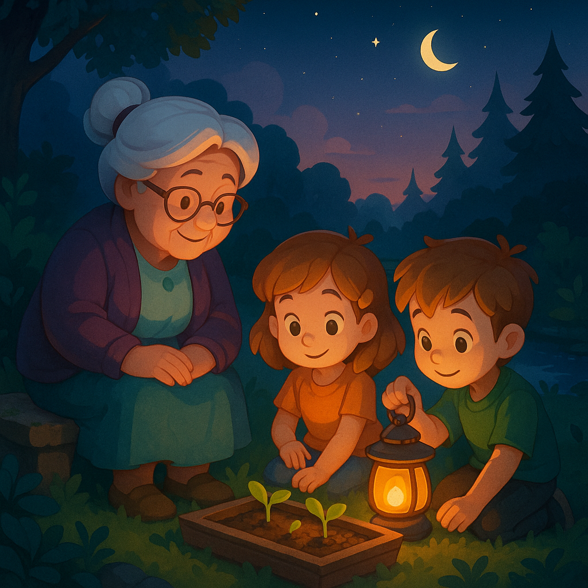

An einem milden Frühsommertag lädt Oma Lotta ihre Enkel Lotta (ja, sie haben denselben Namen!) und Jonas zum Entdecken in den Familiengarten ein. Die Sonne wirft goldene Flecken auf den frisch gemähten Rasen, und zwischen Rosenbüschen duftet es nach Honig. „Kommt mit“, ruft Oma und führt die Kinder hinter einen alten Rosenbogen, der zu einer verwunschen wirkenden Gartenhütte aus verwittertem Holz führt.
Die Tür knarrt geheimnisvoll, als Lotta sie hebt. Im Inneren reihen sich Regalbretter voller bunter Töpfchen. Jedes Gefäß trägt eine handgeschriebene Etikette: „Lavendelsaft“, „Rosentrunk“, „Minzpulver“. Ein leises Summen erklingt – vermutlich von Bienen, die sich in luftigen Gläsern sammeln und summend erzählen, wie sie den Garten erleben.
Auf einem Tisch liegen verstreut winzige Samenpäckchen: leuchtend rote Mohnblumen, zartblaue Kornblumen und geheimnisvolle, tiefviolette Nachtkerzen. Darunter entdecken Lotta und Jonas einen vergilbten Brief: „Für meine kleinen Helfer – wer gut hütet, dem werden Wunder begegnen.“
Neugierig winden die Geschwister sich durch die duftenden Kräuterregale. Jonas hebt eine kleine Schachtel vom Boden auf: ein filigraner Schlüssel aus Messing, verziert mit Efeuranken. Oma zwinkert: „Das ist der Schlüssel zum Zwergenschrank.“ Vorsichtig stecken sie ihn in ein winziges Schloss an der Seite der Hütte. Mit einem Klick öffnet sich eine Miniatur-Schublade – und darin liegt eine Zeitung im Format eines Fingernagels, bebildert mit winzigen Gartenzwergen, die im Morgentau tanzen.
Lotta kichert: „Schau, hier ist eine Anleitung zum Zwergentanz!“ Gemeinsam legen sie die Zeitung auf einen flachen Stein und folgen den gezeichneten Schritten: ein Hüpfen, ein Drehen, ein leises Summen. Schon nach dem zweiten Tanz begegnet ihnen ein Rascheln im Lavendel. Vorsichtig schieben sie die Äste beiseite – und ein kleiner Igel späht hervor, als wolle er applaudieren.
Oma setzt sich auf die alte Holzbank und reicht jedem Kind eine Schale mit Lavendelblüten-Tee. Lotta nippt vorsichtig und schließt genießerisch die Augen: „Das schmeckt wie ein Sommertag im Garten!“ Jonas stochert im Boden neben der Hütte und entdeckt weitere glitzernde Kiesel, die wie Wegweiser wirken. Jeder Kiesel scheint in eine andere Richtung zu weisen – zum Teich, zur Obstwiese, zum Apfelbaum.
Gemeinsam folgen sie dem Kieselpfad bis zu einer versteckten Bank am Teich. Unter dem Sitz finden sie eine schmale Tasche aus Leinen: gefüllt mit winzigen Gartenwerkzeugen – Schaufel, Rechen, Gießfläschchen – alles in Kindergröße. Eine Karte liegt bei: „Pflanzt Samen mit Herz, und ihr werdet ernten, was ihr sät.“
Mit vereinten Kräften graben Lotta und Jonas eine kleine Fläche im Beet frei. Sie säen Mohn- und Kornblumensamen, gießen mit den Zwergen-Gießflaschen und sprechen leise ihren Wunsch: „Wächst und blüht.“ Dann verabschieden sie sich von der Hütte, die mit einem letzten Mozzarella-Teigknarren ins Schließen zurückkehrt.
Am Abend, wenn die ersten Sterne erscheinen, kommen Oma, Lotta und Jonas noch einmal in den Garten. Zwischen den frisch gepflanzten Samen leuchtet eine winzige Laterne, als hätten die Zwerge ein Dankeschön angezündet. Die Kinder lächeln und wissen: Wer mit Staunen im Herzen sucht, findet Wunder an jedem Winkel – besonders in Omas geheimnisvoller Gartenhütte.